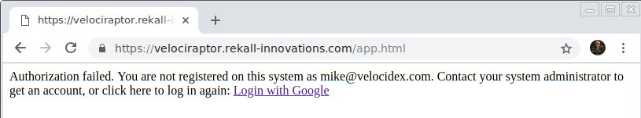

Deploying in the cloud
Many users choose to deploy Velociraptor in the cloud. This is a convenient and reliable option. One of the advantages of cloud deployment is the possibility of minting a proper SSL certificate using the free Letsencrypt CA. This elimintates the bad certificate browser warning seen in the Self Signed Deployment method. Velociraptor is able to use the Letsencrypt protocol to obtain and manage its own certificates (and automatically rotate them when they expire).
In this page we will explore how Velociraptor can be deployed in the cloud.
Getting a domain name
An SSL certificate says that the DNS name is owned by the server which presents it. Therefore SSL goes hand in hand with DNS. It is not currently possible to get a Letsencrypt certificate for an IP address.
Therefore the first thing you need to do is to buy a DNS domain from any provider. Once there, you need to set up a DNS A Record to point at your Velociraptor server’s external IP. You can use a dynamic DNS client such as ddclient to update your DNS->IP mapping dynamically.
In this example we use Google Domains to purchase our domain, but any other domain provider would work as well.
Provisioning a Virtual Machine
Next we provision an Ubuntu VM from any cloud provider. Depending on your deployment size your VM should be large enough. An 8 or 16Gb VM should be sufficient for around 5-10k clients. Additionally we will need sufficient disk space to hold the data we will collect. We recommend to start with a modest amount of storage and then either backup data as it gets collected or increase the storage volume as needed.
It is essential to ensure that inbound filtering ACLs allow our virtual machine to receive connections over both ports 80 and 443. When using SSL both the client communication and the GUI are served over the same ports to benefit from SSL transport encryption. The Letsencrypt protocol requires Letsencrypt’s servers to connect to the VM on port 80 - however the GUI itself will only be served over SSL.
When we deploy our Virtual Machine we may choose either a static IP address or allow the cloud provider to assign a dynamic IP address. We typically choose a dynamic IP address and so we need to configure Dynamic DNS.
Google Domains allows us to assign a dynamic DNS entry for our domain by simply select a Dynamic DNS record:

After the dynamic address is created, we can get the credentials for
updating the IP address from the console. We will use these
credentials in the ddclient configuration file on our server VM.

Next we install ddclient on our VM. This will update our dynamic IP
address whenever the external interface changes. Configure the file
/etc/ddclient.conf:
protocol=dyndns2
use=web
server=domains.google.com
ssl=yes
login=X13342342XYZ
password='slk43521kj'
velociraptor.rekall-innovations.com
Next configure the service to start by editing /etc/default/ddclient:
# Configuration for ddclient scripts
# generated from debconf on Tue Oct 23 20:25:23 AEST 2018
#
# /etc/default/ddclient
# Set to "true" if ddclient should be run every time DHCP client ('dhclient'
# from package isc-dhcp-client) updates the systems IP address.
run_dhclient="false"
# Set to "true" if ddclient should be run every time a new ppp connection is
# established. This might be useful, if you are using dial-on-demand.
run_ipup="false"
# Set to "true" if ddclient should run in daemon mode
# If this is changed to true, run_ipup and run_dhclient must be set to false.
run_daemon="true"
# Set the time interval between the updates of the dynamic DNS name in seconds.
# This option only takes effect if the ddclient runs in daemon mode.
daemon_interval="300"
Run dhclient and check that it updates the address correctly.
Configure Velociraptor to use autocert
Velociraptor can issue its own certificates. Using the guided configuration wizard we may select this operation mode:
$ ./output/velociraptor config generate -i
?
Welcome to the Velociraptor configuration generator
---------------------------------------------------
I will be creating a new deployment configuration for you. I will
begin by identifying what type of deployment you need.
[Use arrows to move, space to select, type to filter]
Self Signed SSL
> Automatically provision certificates with Lets Encrypt
By selecting this option the generated configuration file will ensure:
The server will fetch certificates automatically from Letsencrypt’s servers when first accessed by the browser.
Both the Frontend and GUI will be served over the standard SSL port (443).
The GUI is therefore externally available (but protected over SSL) to the internet.
Clients will connect to the public DNS name over SSL.
You must have both ports 80 and 443 publicly accessible by allowing any inbound firewall rules! Letsencrypt uses both to issue certificates. If you forgot to open port 80, Letsencrypt will fail to issue the certificate and this might result in blocking the domain name from getting an SSL certificate for several days. If you find this happened, simply change the dyndns name and start again.
The first time you connect to the GUI or to the frontend, the server will obtain its own certificates from letsencrypt (it might take a couple of seconds to respond the first time). You should have no SSL warnings in your browser.
Configuring Google OAuth SSO
In the previous sections we saw how to set up Velociraptor’s GUI over SSL. This is great, but we still need to create users and assign them passwords manually. The trouble with user account management is that we can not enforce 2 factor authentication, or any password policies or any of the usual enterprise requirements for user account management. It is also difficult for users to remember yet another password for a separate system, and so might make the password easily guessable.
Most enterprise systems require an SSO mechanism to manage user accounts and passwords. Manual user account management simply does not scale!
We now discuss how to enable Google’s SSO authentication for Velociraptor identity management.
OAuth Identity management
Velociraptor can use Google’s oauth mechanism to verify a user’s identity. This requires a user to authenticate to Google via their usual mechanism - if their account requires 2 factor authentication, then users need to log in this way.
Once the user authenticates to Google, they are redirected back into the Velociraptor application with a token that allows the application to request information about the user (for example, the username or email address).
OAuth is an authentication protocol. This means Velociraptor can be pretty confident the user is who they claim they are. This does not automatically grant them access to the application! A Velociraptor administrator must still manually grant them access before a user may log in.
Before we can use Google for Authentication, we need to register our Velociraptor deployment as an OAuth App with Google.
Registering Velociraptor as an OAuth application
The first step is to register Velociraptor as an OAuth app. We do this by accessing the Google cloud console at https://console.cloud.google.com . You will need to set up a cloud account first and create a cloud project - even if you do not host your server on Google’s cloud platform.
Our ultimate goal is to obtain OAuth credentials to give our
Velociraptor app, but we have to have a few things set up
first. Navigate to APIs and Services in the GCP console and select
Credentials and the OAuth Consent Screen tab.

Further down we need to provide an authorized domain

In order to add an Authorized domain we need to verify it. Google’s help pages explain it further:
Authorized domains: To protect you and your users, Google restricts your OAuth 2.0 application to using Authorized Domains. If you have verified the domain with Google, you can use any Top Private Domain as an Authorized Domain.
In this example we assume that you purchased your domain with Google domains which makes this step easier since it is already verified.
We can go back to the cloud console and Create Credentials/OAuth
client ID:

Now select Web App and we must set the Authorized redirect URIs to
https://<Your Domain Name>/auth/google/callback -
This is the URL that successful OAuth authentication will redirect
to. Velociraptor accepts this redirect and uses it to log the user on.

If all goes well the Google cloud console will give us a client ID and
a client secret. Now we are ready to select Authenticate users with
Google OAuth SSO from the guided installation wizard.
$ velociraptor config generate -i
?
Welcome to the Velociraptor configuration generator
---------------------------------------------------
I will be creating a new deployment configuration for you. I will
begin by identifying what type of deployment you need.
Authenticate users with Google OAuth SSO
Generating keys please wait....
? What is the public DNS name of the Frontend (e.g. www.example.com): www.example.com
? Enter the Google OAuth Client ID? 1234xxxxxx.apps.googleusercontent.com
? Enter the Google OAuth Client Secret? qsadlkjhdaslkjasd
? Path to the datastore directory. (/tmp)
Now we can start the Velociraptor frontend:
$ velociraptor --config server.config.yaml frontend -v
Connecting using the browser goes through the familiar OAuth flow and arrives at this Velociraptor screen:

The OAuth flow ensures the user’s identity is correct but does not give them permission to log into Velociraptor. Note that having an OAuth enabled application on the web allows anyone with a Google identity to authenticate to the application but the user is still required to be authorized explicitly. If a user is rejected, we can see the following in the Audit logs:
{
"level": "error",
"method": "GET",
"msg": "User rejected by GUI",
"remote": "192.168.0.10:40570",
"time": "2018-12-21T18:17:47+10:00",
"user": "mike@velocidex.com"
}
In order to authorize the user we must explicitly add them using the velociraptor admin tool:
$ velociraptor --config ~/server.config.yaml user add mike@velocidex.com
Authentication will occur via Google - therefore no password needs to be set.
Note that this time, Velociraptor does not ask for a password at all, since authentication occurs using Google’s SSO. If we hit refresh in the browser we should be able to see the Velociraptor application dashboard.
We can see that the logged in user is authenticated by Google, and we can also see the user’s Google avatar at the top right for some more eye candy :-).
Velociraptor will retain its OAuth token for 24 hours. Each day users
will need to re-grant OAuth credentials. Therefore revoking a user
from the Google Admin console may take a full day to take effect. To
remove access sooner you should use velociraptor --config
server.config.yaml user lock MyUserName at the console.